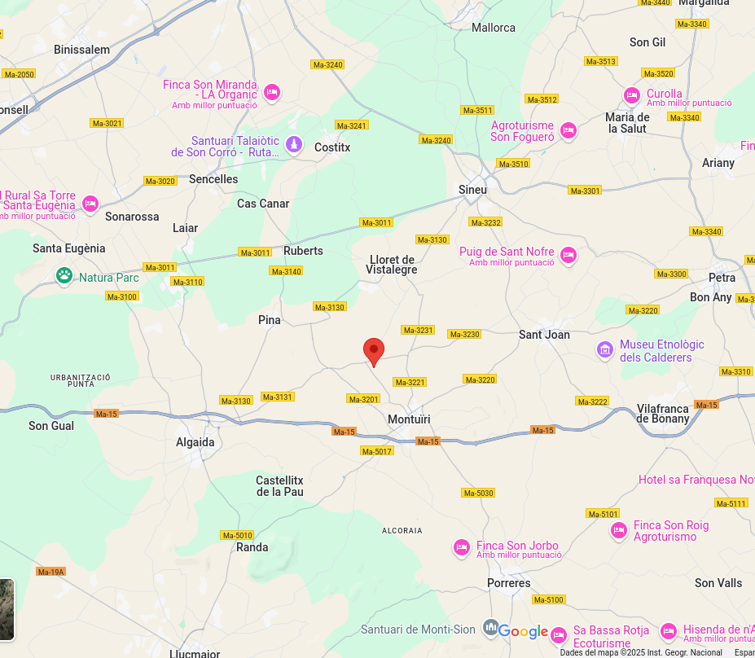

Descripció
El jaciment arqueològic de Son Fornés, ocasionalment anomenat Son Forners, és un dels més importants de la prehistòria balear.
Ubicació
Es troba a la localitat de Montuïri, al bell mig del Pla de Mallorca, en una antiga possessió, la qual li dona nom.

Imatges